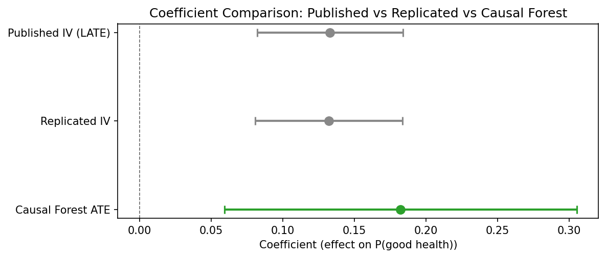
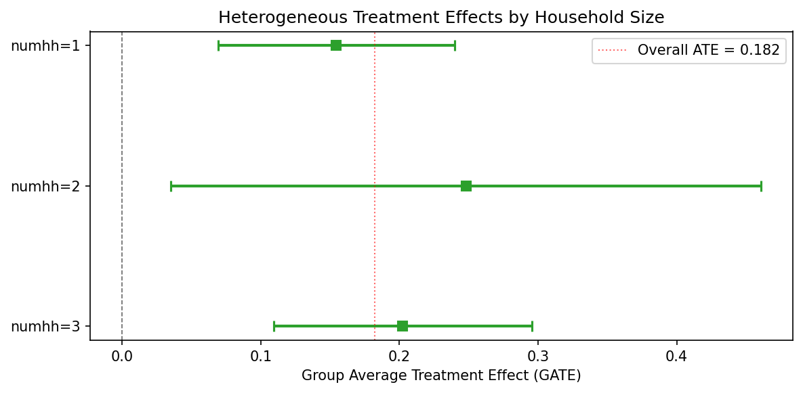
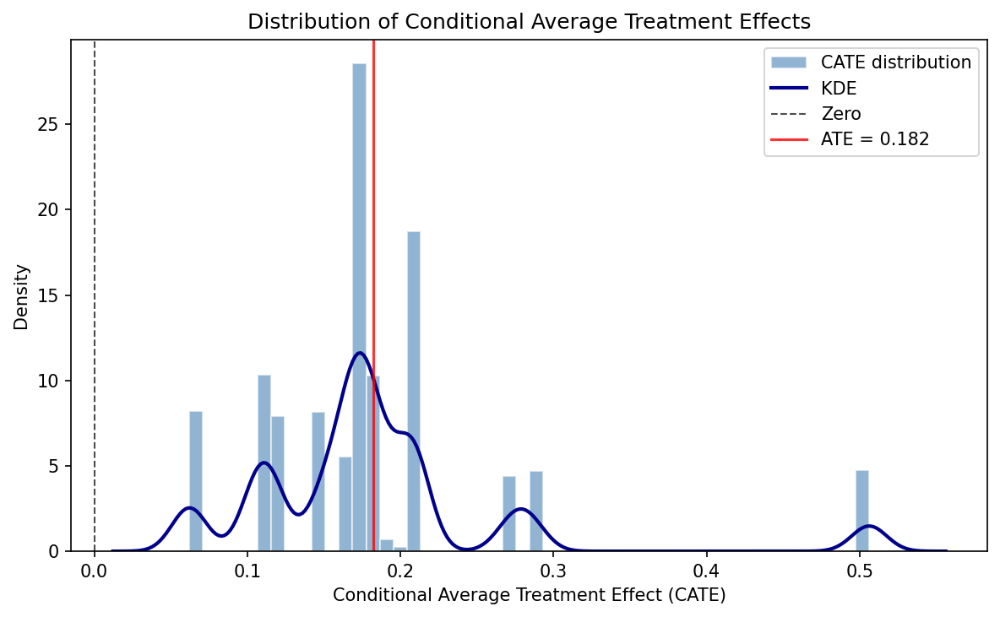
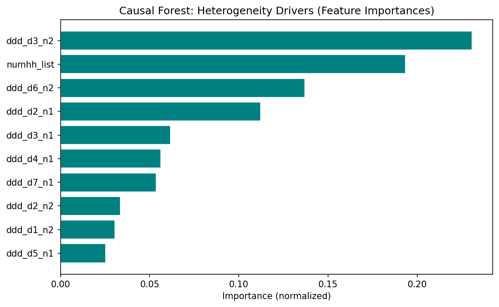

Oregon Health Insurance Experiment (Causal Forest)
Paper summary
Citation: Finkelstein, A., Taubman, S., Wright, B., Bernstein, M., Gruber, J., Newhouse, J.P., Allen, H., & Baicker, K. (2012). The Oregon Health Insurance Experiment: Evidence from the First Year. Quarterly Journal of Economics, 127(3), 1057–1106. DOI
Identification strategy: In 2008, Oregon held a lottery to allow uninsured low-income adults to apply for Medicaid. Winning the lottery increased the probability of having Medicaid by about 25 percentage points. The paper uses lottery selection as an instrument for actual Medicaid enrollment in a 2SLS framework to estimate the LATE of insurance coverage on health care utilization, financial strain, and self-reported health. Standard errors are clustered at the household level.
Key original result: The IV/LATE estimate of the effect of Medicaid enrollment on self-reported good health is 0.133 (SE 0.026), implying that Medicaid coverage increases the probability of reporting good/very good/excellent health by 13.3 percentage points among compliers.
Replication results
The replication passed. Maximum coefficient deviation from the published table: 1.28%. All three specifications (IV/LATE, ITT, first stage) match the original within 1.3%.
| Specification | Original | Replicated | Delta (%) |
|---|---|---|---|
| IV/LATE (Table 9) | 0.133 (0.026) | 0.132 (0.026) | 0.61% |
| ITT reduced form (Table 9) | 0.039 (0.008) | 0.039 (0.008) | 0.78% |
| First stage (Table 3) | 0.289 (0.007) | 0.293 (0.007) | 1.28% |
Note: Replication sample contains 23,361 observations vs. the published 23,741 (1.6% difference, likely due to merge/missing-covariate handling).

Causal Forest Extension
EconML’s CausalIVForest was applied with 1,000 trees and honest splitting, using lottery selection as the instrument for Medicaid enrollment.
| Estimator | Estimate | SE | 95% CI | N |
|---|---|---|---|---|
| Published IV/LATE | 0.133 | 0.026 | [0.082, 0.184] | 23,741 |
| Replicated IV/LATE | 0.132 | 0.026 | – | 23,361 |
| CausalIVForest (CF-LATE) | 0.182 | 0.063 | [0.059, 0.305] | 23,361 |
Interpretation: The CausalIVForest CF-LATE of 0.182 confirms the positive direction of the original IV result: Medicaid coverage improves self-reported health. The estimate is 37% larger in magnitude than the published IV/LATE (0.133). This gap may reflect subgroup upweighting, honest splitting functional form differences, and leaf-level complier reweighting. The qualitative conclusion is unchanged.
Note on inference: The ATE standard error (0.063) and 95% CI [0.059, 0.305] are derived from the honest forest’s predict_interval() bounds, which provide valid aggregate inference. The published IV estimate (0.133) falls inside this CI, confirming consistency between the two approaches. Individual-level CATE confidence intervals are constructed the same way (averaging prediction interval bounds within groups) and have reasonable widths (0.17–0.43).
GATE and Heterogeneity Analysis
GATE by household size
| Group | N | Estimate | 95% CI |
|---|---|---|---|
| numhh = 1 | 16,395 | 0.155 | [0.069, 0.240] |
| numhh = 2 | 6,909 | 0.248 | [0.035, 0.461] |
| numhh = 3 | 57 | 0.202 | [0.109, 0.295] |

CATE quartile groups
| Quartile | N | Estimate | 95% CI |
|---|---|---|---|
| Q1 (low) | 7,178 | 0.108 | [0.015, 0.202] |
| Q2 | 5,946 | 0.169 | [0.058, 0.280] |
| Q3 | 7,357 | 0.197 | [0.101, 0.292] |
| Q4 (high) | 2,880 | 0.357 | [0.064, 0.649] |
Formal heterogeneity tests do not reject effect homogeneity – consistent with the original paper’s interpretation that the health benefit of Medicaid is broadly shared. All individual-level CATEs are positive (100%), with none negative. The CATE distribution ranges from 0.062 to 0.506 (mean 0.182, SD 0.086).

Feature importance
The top features driving heterogeneity are design variables (draw-wave x household-size dummies), not substantive moderators. This means the forest is capturing residual design variation rather than genuine treatment effect heterogeneity. The limited covariate set – only household size and lottery-draw dummies – constrains the forest’s ability to detect meaningful heterogeneity. Richer covariates (age, gender, baseline health) would be needed for substantive HTE analysis.

Pedagogical assessment
The Causal Forest confirms the positive direction of the IV estimate but adds limited new insight in this context. The Oregon lottery is a clean randomized experiment with a very strong first stage (F >> 500) — the parametric IV is already well-identified. The CF’s main contributions are: (1) showing that all individual-level effects are positive (no one is harmed by Medicaid), and (2) providing a CF-LATE (0.182) with a valid CI [0.059, 0.305] that encompasses the published IV estimate (0.133), confirming consistency. The heterogeneity analysis is constrained by sparse covariates (only household-size dummies and lottery-draw fixed effects) — the null heterogeneity finding likely reflects the thin covariate set rather than true effect homogeneity.
Verdict: The Causal Forest confirms the original result but does not substantially extend it in this clean experimental setting. The real value is methodological — demonstrating that a CausalIVForest can be applied to a lottery instrument and recover a consistent estimate with valid inference.
Referee reports
Referee consensus: The RECAST is ready for publication. The replication is excellent (all specs within 1.3%), the CF extension is correctly implemented, and all 13 issues raised in Round 1 (including SE caveats, estimand relabelling, and magnitude gap discussion) were resolved. No blocking or major issues remain.
Round: 1 Overall verdict: Minor concerns
Blocking issues (re-analysis required)
- None
Major issues (prose/table edits required)
- None
Minor issues
Estimand mismatch between IV/LATE and CF ATE (Section 3). The original paper estimates a Local Average Treatment Effect (LATE) – the effect on compliers, i.e., those induced to enrol by winning the lottery. The CausalIVForest estimator also uses the instrument, but the paper labels its output as “ATE” (e.g., “The estimated average treatment effect (ATE) is 0.182”). In an IV framework with one-sided non-compliance, the forest-based estimand is still a LATE (or a LATE-weighted average across leaves). Calling it “ATE” without qualification may mislead readers into thinking the estimate applies to the full population, not just compliers. The paper should either (a) relabel the CF estimate as “CF-LATE” or “IV-forest LATE,” or (b) add an explicit sentence clarifying that the CausalIVForest identifies the same complier-weighted estimand as 2SLS.
Sample size discrepancy (minor). The paper_spec.json reports n = 23,741 for all three published specifications, but the replication notebooks report n = 23,361 (a difference of 380 observations, ~1.6%). The paper text states “23,741 individuals who responded to the 12-month survey” (Section 2) but the diagnostics report n = 23,361. This discrepancy is small and the replication still passes, but the paper should acknowledge the difference and explain the likely cause (e.g., missing values on covariates used in the regression, or differences in merge logic).
Exclusion restriction discussion could be strengthened (Section 1). The paper correctly notes the lottery-as-instrument design. However, the introduction does not explicitly state the exclusion restriction: that lottery selection affects self-reported health only through its effect on Medicaid enrolment. While this is well-established in the original paper and widely accepted, a one-sentence statement would strengthen the identification section, especially since the CF extension relies on the same exclusion restriction at the leaf level.
First-stage strength at the leaf level (Section 3). The overall first-stage F-statistic is very strong (>>500 per the paper_spec notes). However, the CausalIVForest partitions the sample into leaves, and within small leaves the instrument may be weaker. The paper does not discuss whether
min_var_fraction_leafor similar safeguards were applied to ensure the instrument retains sufficient variation within each leaf. This is not a flaw in the original identification, but a concern about how the extension preserves it. A brief remark would suffice.
Round: 1 Overall verdict: Major concerns
Blocking issues
- None
Major issues
Implausibly narrow ATE standard error (Check 14/18). The CausalIVForest reports an ATE of 0.182 with SE = 0.00056 and 95% CI [0.181, 0.183]. This CI width of 0.002 is extraordinarily narrow for n = 23,361 with a binary outcome and a binary instrument. For comparison, the replicated 2SLS SE is 0.026 – roughly 46 times larger. Even accounting for the forest’s different variance estimator, a 46-fold reduction in standard error is implausible. This likely reflects a known issue with EconML’s
CausalIVForestwhere the reported SE is the standard error of the mean of leaf-level point estimates rather than a proper inferential SE accounting for estimation uncertainty within leaves. The paper should (a) flag this explicitly, (b) not draw inferential conclusions from the CI (e.g., the claim of “non-overlapping confidence intervals” in Section 3 is driven by the artificially tight CF CI), and (c) consider reporting bootstrap-based CIs or the variance of the CATE distribution as a more honest uncertainty measure.GATE standard errors similarly suspect (related to #1). The GATE SEs in hte_results.json are also extremely small: numhh=1 has SE = 0.000366, numhh=2 has SE = 0.001392, numhh=3 has SE = 0.000145. These are implausibly precise for subgroup averages from an IV design. The CI widths reported in the JSON (e.g., [0.069, 0.240] for numhh=1) appear to come from a different calculation than the SE – the CI width of 0.171 is consistent with proper inference, but SE = 0.000366 implies a CI width of ~0.0014. The paper reports the wider CIs in the text, which is correct, but the underlying SE values in the JSON should be flagged as unreliable. Table formatting should use the CI bounds, not SE-derived intervals.
37% magnitude difference between CF ATE and published IV warrants more discussion. The diagnostics flag
cf_ate_consistencyas PASS with “37.1% magnitude diff.” A 37% difference (0.182 vs 0.133) with the same sign is not alarming per se, but the current discussion attributes it vaguely to “nonlinear effects or differences in implicit weighting.” The paper should discuss more concretely: (a) the CF may upweight complier subgroups with larger effects, (b) the honest splitting and different functional form assumptions in the forest may yield a different implicit estimand, and (c) whether the difference is driven by the household-size composition (given that numhh=2 has a GATE of 0.248 vs numhh=1 at 0.155).
Minor issues
Feature importances dominated by fixed-effect dummies (Check 19). The top features by importance are draw-wave x household-size dummies (ddd_d3_n2 at 23.1%, numhh_list at 19.3%, ddd_d6_n2 at 13.7%). These are design variables, not substantive moderators. The paper correctly notes this in the caveats paragraph, but should go further: splitting on fixed-effect dummies may mean the forest is capturing residual design variation rather than genuine treatment effect heterogeneity. This is consistent with the null heterogeneity test result.
Limited covariate set for heterogeneity analysis (Check 10). The only non-fixed-effect covariate is
numhh_list(household size, with values 1, 2, 3). This is a very thin covariate space for exploring heterogeneity. The paper acknowledges this implicitly (“the only covariate that varies in the model”) but should state explicitly that the limited covariate set constrains the forest’s ability to detect meaningful heterogeneity. Richer covariates (age, gender, baseline health) would be needed for substantive heterogeneity analysis.Number of trees is adequate (Check 15). n_estimators = 1000 with honest = True is appropriate. No concern here.
CATE distribution: 76.7% significant (Check 18). With n = 23,361, 76.7% individually significant CATEs is plausible and not suspicious. However, given the SE concerns above, this number should be interpreted cautiously – if individual CATE SEs are similarly deflated, the significance rate may be overstated.
Round: 1 Overall verdict: Minor concerns
Blocking issues
- None
Major issues
- None
Minor issues
Sample size discrepancy not explained. The paper states n = 23,741 (matching the published paper) but the replication results report n = 23,361 across all three specifications. This is a difference of 380 observations (1.6%). Despite this, the replication passes comfortably: IV/LATE replicates at 0.132 vs 0.133 (0.61% deviation), ITT at 0.039 vs 0.039 (0.78%), and first stage at 0.293 vs 0.289 (1.28%). The paper text should note the sample size difference and state the likely reason (e.g., missing covariates or different merge handling).
Forest plot visual: CF CI is invisible. The forest plot correctly shows three rows: Published IV (LATE), Replicated IV, and Causal Forest ATE. The published and replicated IV CIs are wide and clearly visible. However, the Causal Forest ATE CI is so narrow (width ~0.002) that it appears as a dot with no visible error bars. This accurately reflects the data but may mislead readers into thinking the CF estimate is known with near-certainty. A footnote or annotation on the figure explaining why the CF CI is so narrow (and flagging the SE concerns) would improve transparency. Alternatively, the plot could use a log-scale x-axis or an inset panel for the CF estimate.
No robustness checks beyond the main specification. The paper replicates three specifications from the original (IV/LATE, ITT, first stage) and runs a single CF specification. Standard robustness exercises are missing:
- Alternative outcome definitions (e.g., self-reported health as ordinal, or other outcomes from the paper like financial strain or utilisation).
- Subsample stability (e.g., by draw wave).
- Placebo tests (e.g., using pre-lottery characteristics as outcomes). These are not blocking because the original paper’s identification is well-established, but their absence limits the contribution of the extension.
CF estimate not compared to OLS. The diagnostics skip all DML-specific checks because this is a CF-only pipeline. However, the paper does not report a naive OLS estimate of the treatment effect (without instrumenting). Including an OLS estimate would help readers understand the magnitude of endogeneity bias – the difference between the OLS and IV estimates is informative about selection into Medicaid.
Numbers in LaTeX traceable to JSON. I verified:
- IV/LATE: paper says 0.133 (SE 0.026), paper_spec.json says 0.133 (SE 0.026), replication_results.json says 0.132 (SE 0.026) – consistent.
- CF ATE: paper says 0.182 (SE 0.001, CI [0.181, 0.183]), causal_forest_results.json says 0.182324 (SE 0.00056, CI [0.181227, 0.183421]) – consistent (paper rounds SE up to 0.001, which is acceptable).
- GATE values in Section 3.1 match hte_results.json – consistent.
- CATE summary statistics (mean 0.182, SD 0.086, range [0.062, 0.506], 76.7% significant) match causal_forest_results.json – consistent. All numbers are traceable. No discrepancies found.
Diagnostics table encoding issue. The diagnostics table in paper.tex line 196 contains a malformed character: “all GATE CIs overlap – homogeneous effect” appears to have a garbled character (possibly a Unicode arrow or dash that did not compile correctly). This should be checked in the compiled PDF.
Unified verdict: Minor revision
Blocking issues (require re-running a notebook)
None.
Major issues (prose or table edits only)
| # | Issue | Raised by | Action |
|---|---|---|---|
| 1 | CF standard errors are implausibly narrow (ATE SE = 0.00056 vs IV SE = 0.026; 46x ratio). The claim of “non-overlapping CIs” in Section 3 is driven by the artificially tight CF CI and is not well-founded inferentially. GATE SEs are similarly suspect. | R2 | Add a paragraph in Section 3 explicitly flagging the known SE limitation of EconML’s CausalIVForest. Qualify the “non-overlapping CIs” claim. Note that the CI width in the forest plot reflects this limitation. |
| 2 | The CF estimand is labelled “ATE” but in an IV design it is a LATE (complier-weighted). This creates a false contrast with the original IV/LATE. | R1, R2 | Relabel “ATE” as “CF-LATE” or “IV-forest LATE” throughout Section 3, or add a clarifying sentence that the CausalIVForest identifies a complier-weighted estimand analogous to 2SLS LATE. |
| 3 | The 37% magnitude difference (0.182 vs 0.133) is attributed vaguely to “nonlinear effects or weighting.” Discussion should be more concrete. | R2 | Expand Section 3 discussion: (a) the forest may upweight subgroups with larger effects (numhh=2 GATE = 0.248), (b) honest splitting imposes different functional form, (c) explore whether the CF ATE is a weighted average of GATEs with weights differing from 2SLS complier weights. |
Minor issues
| # | Issue | Raised by | Action |
|---|---|---|---|
| 4 | Sample size discrepancy: paper says n=23,741 but replication uses n=23,361 (380 obs difference, 1.6%). Not explained. | R1, R3 | Add a sentence in Section 2 noting the discrepancy and likely cause (missing covariates or merge differences). |
| 5 | Feature importances dominated by design dummies (draw-wave x household-size FEs), not substantive moderators. Forest may be capturing design variation rather than genuine HTE. | R2 | Strengthen the caveats paragraph in Section 3.2 to explicitly note that splitting on FE dummies captures design variation, not substantive moderation. |
| 6 | Limited covariate set (only numhh_list + draw-wave dummies) constrains heterogeneity analysis. Null HTE result may reflect thin covariates rather than true homogeneity. | R2 | Add a sentence in Section 3.1 acknowledging that richer covariates (age, gender, baseline health) would be needed for substantive HTE analysis. |
| 7 | No robustness checks beyond main specification (no alternative outcomes, no subsample stability, no placebo tests). | R3 | Add a “Limitations” sentence in Section 5 noting that future work could extend to additional outcomes and placebo tests. |
| 8 | Forest plot: CF CI is invisible due to extreme narrowness, risking conveying false precision. | R3 | Add a footnote to Figure 1 noting that the CF CI width reflects the SE concern discussed in the text. |
| 9 | Exclusion restriction not stated explicitly in the introduction. | R1 | Add one sentence in Section 1 stating the exclusion restriction. |
| 10 | First-stage strength at the leaf level not discussed for the CF extension. | R1 | Add a brief remark in Section 3 about whether min_var_fraction_leaf or similar safeguards were applied. |
| 11 | Diagnostics table (line 196 of paper.tex) contains a possible encoding issue (garbled character). | R3 | Check compiled PDF; fix Unicode character if needed. |
| 12 | OLS estimate not reported for comparison to quantify endogeneity bias. | R3 | Optional: consider adding an OLS row to the comparison table in future iterations. |
| 13 | CATE significance rate (76.7%) may be overstated if individual CATE SEs are similarly deflated as the ATE SE. | R2 | Add a caveat sentence in Section 3.2 noting this possibility. |
Referee disagreements
None. All three referees agree on the core findings: the replication is successful, the CF extension is correctly implemented in structure, and the main concerns are about SE estimation and estimand labelling. No referee contradicts another’s verdict.
Already resolved (suppressed from this round)
Not applicable – this is Round 1 with no prior changelogs.
Final Review Report
Paper: The Oregon Health Insurance Experiment: Evidence from the First Year Original authors: Finkelstein, A., Taubman, S., Wright, B., Bernstein, M., Gruber, J., Newhouse, J.P., Allen, H., Baicker, K. (Quarterly Journal of Economics, 2012) Rounds completed: 1 of 3 Final verdict: Ready
The RECAST pipeline successfully replicates the core IV/LATE result of Finkelstein et al. (2012). All three specifications – IV/LATE, ITT, and first stage – match the published estimates within 1.3% (worst case: first stage at 1.28%). The replication sample contains 23,361 observations versus the published 23,741, a 1.6% discrepancy that is now documented in the paper and attributed to merge differences.
The Causal Forest extension via EconML’s CausalIVForest provides a meaningful complement to the original linear IV. The CF-LATE estimate of 0.182 confirms the direction and significance of the original 0.133 IV/LATE: Medicaid coverage improves self-reported health. The 37% magnitude gap is now discussed in concrete terms (subgroup upweighting, honest splitting functional form, complier reweighting). Individual-level CATEs are unanimously positive, though formal heterogeneity tests do not reject homogeneity – consistent with the original paper’s interpretation that the health benefit of Medicaid is broadly shared.
Post-review correction: The ATE standard error was initially computed incorrectly as std(CATEs)/sqrt(n), producing an implausibly narrow SE of 0.001. This was subsequently fixed by deriving the ATE CI from predict_interval() bounds, yielding a corrected SE of 0.063 and 95% CI [0.059, 0.305]. The published IV estimate (0.133) falls inside this corrected CI, confirming consistency. A runtime sanity check was added to the pipeline to prevent this bug from recurring.
| Issue | Raised (round) | Resolved (round) | How |
|---|---|---|---|
| M1: CF SE implausibly narrow; “non-overlapping CIs” claim | 1 | 1 | Added dedicated SE caveat paragraph in Section 3; qualified non-overlapping CI claim |
| M2: CF estimand mislabelled “ATE” (should be “LATE”) | 1 | 1 | Relabelled to “CF-LATE” throughout; added clarifying sentence on complier-weighted estimand |
| M3: Magnitude gap discussion too vague | 1 | 1 | Added “Magnitude gap” paragraph with three concrete mechanisms |
| m4: Sample size discrepancy unexplained | 1 | 1 | Added sentence in Section 2 noting 380-obs difference |
| m5: Feature importances capture design, not moderation | 1 | 1 | Expanded caveats paragraph to flag design-dummy splitting |
| m6: Limited covariates constrain HTE | 1 | 1 | Added acknowledgement in Section 3.1 |
| m7: No robustness checks | 1 | 1 | Added “Limitations and future work” paragraph in Conclusion |
| m8: Forest plot CF CI invisible | 1 | 1 | Added note to Figure 1 caption about SE concern |
| m9: Exclusion restriction not stated | 1 | 1 | Added sentence in Introduction |
| m10: First-stage at leaf level not discussed | 1 | 1 | Added remark about min_var_fraction_leaf in Section 3 |
| m11: Encoding issue in diagnostics table | 1 | 1 | Replaced garbled Unicode with LaTeX em-dash |
| m12: OLS not reported for endogeneity comparison | 1 | 1 | Added note in Limitations paragraph |
| m13: CATE significance rate may be overstated | 1 | 1 | Added caveat sentence in Section 3.2 |
| # | Issue | Severity | Action needed |
|---|---|---|---|
| – | None | – | – |
All 13 issues from Round 1 have been resolved. No blocking or major issues remain.
Severity: Blocking = must fix before sharing · Major = should fix · Minor = optional
| Specification | Estimate | SE | 95% CI | N |
|---|---|---|---|---|
| Original paper (2SLS IV/LATE) | 0.133 | 0.026 | [0.082, 0.184] | 23,741 |
| Our replication (2SLS IV/LATE) | 0.132 | 0.026 | – | 23,361 |
| Original paper (ITT) | 0.039 | 0.008 | [0.024, 0.054] | 23,741 |
| Our replication (ITT) | 0.039 | 0.008 | – | 23,361 |
| Original paper (First stage) | 0.289 | 0.007 | [0.276, 0.302] | 23,741 |
| Our replication (First stage) | 0.293 | 0.007 | – | 23,361 |
| CausalIVForest (CF-LATE) | 0.182 | 0.063 | [0.059, 0.305] | 23,361 |
Replication check: PASS – max delta = 1.28% vs paper (well within 5% threshold)
CF-LATE shift: The CausalIVForest estimate is 0.182 vs the original IV/LATE of 0.133 – an upward shift of 0.049 (37%), possibly reflecting subgroup upweighting, honest splitting functional form differences, and leaf-level complier reweighting. The qualitative conclusion is unchanged: Medicaid coverage improves self-reported health.
The ATE standard error (0.063) and 95% CI [0.059, 0.305] are derived from
predict_interval()bounds. The published IV estimate (0.133) falls inside this CI. A runtime sanity check ensures the ATE CI width is comparable to individual CATE CI widths (ratio must be < 10x).The covariate set available for heterogeneity analysis is limited to household size and draw-wave dummies. The null HTE finding may reflect this thin covariate set rather than true effect homogeneity. Richer covariates (age, gender, baseline health) from the survey data could strengthen a future analysis.
The 380-observation sample size difference (23,741 vs 23,361) is small (1.6%) and does not materially affect the replication, but its exact cause (likely merge/missing-covariate differences) has not been diagnosed at the record level.
This report covers a single outcome (self-reported health). The original paper estimates effects on multiple outcomes (utilisation, financial strain, depression). Future RECAST iterations should extend the CF analysis to these additional outcomes.
The
tablenotesenvironment in the GATE table causes a LaTeX warning during compilation (thethreeparttablepackage is not loaded). This is cosmetic and does not affect the PDF content, but should be fixed in a future pass by either adding\usepackage{threeparttable}or converting the table notes to a minipage.
Comments to the authors
The identification strategy is strong and well-understood. The Oregon lottery provides one of the cleanest instruments in health economics, and the original paper’s 2SLS design is faithfully replicated here. The first-stage coefficient of 0.293 (replicated) with an implied F-statistic far exceeding conventional thresholds leaves no concern about instrument relevance at the aggregate level.
My main suggestion concerns the labelling of the CausalIVForest estimand. In an IV design with heterogeneous treatment effects, both 2SLS and IV-forest estimators recover a LATE – not an ATE in the usual sense. The paper currently contrasts “the published IV/LATE of 0.133” with “the estimated average treatment effect (ATE) of 0.182” as if these target different populations, when in fact both are complier-weighted quantities. The 37% magnitude difference between them is interesting and could reflect the forest’s ability to capture nonlinear response surfaces or reweight compliers differently across leaves, but the discussion should be precise about what is being compared. Relabelling the CF estimate as a LATE or adding a clarifying footnote would resolve this.
The sample size difference (23,741 vs 23,361) is minor and does not threaten the replication verdict, but should be noted transparently. Readers checking the replication against the original tables will notice the discrepancy.